|
|
|
Мамайский Як-Цуп-Цоп Даже и не знаю, с чего начать рассказ ... Вроде бы как всегда - компания собиралась сама по себе - кто хочет и может, тот и едет. Давно мне пора бы понять, что как ни собирай народ, сколько ни пиши и не звони, все равно пойдут те, кто пойдет. Главное, без обид и сожалений, dont worry - be Happy! И хорошо там, где мы есть! Утренняя электричка Слюдянка - Мысовая, отправление в 6:27 утра. Второй раз на Мамай едет Марина, второй сезон на Мамай еду я. Пристроились возле Норика и Хомы. Доехали. На хуторе Мамай вижу, что снега за две недели выпало мало, дорога на трассу проезжаема легковушками. Тропа утоптана, скорее всего народом, желающим побывать на горе Поляна. Байкальский Экстрим по планам должен был заехать еще в четверг вечером, а сейчас они уже наверное тропят по гребню от центрального Мамая вглубь Хамар-Дабана. (P.S: подробности восхожления на Поляну смотрите на сайте "БЭ") А мы вдвоем по стандартной схеме - 3 часа ходу до зимухи, борщ на обед и не спеша на Три Березы. Возле кунга всего две палатки. Тропа наверх утоптана и все также петляет между кустов. Тепло. На противоположном склоне повсеместно видны разрывы снежного покрывала, но следов крупных лавин не наблюдается. Учебка чистая, на Лесном всего два следа и три точки ползут вверх. Ощущение такое, будто все ушли на фронт, т.е. на Поляну. Немного потропили для спрямления тропы и вышли к Трем Березам. Сегодня будем закатывать кулуар Спортивный, где в марте проводились соревнования по фрирайду, а сегодня тишина и покой, а главное - отсутствия следов сноубордистов. Удачно попали в начало кулуара. И как мы в прошлом сезоне два раза в него промахивались? Он же сразу от Берез начинается! Ну и отлично катанули, даже маленькую фотосессию провели. Прыгать с кочек не решился, не соревнования сегодня, как-то они высоковаты, или снега маловато :) В другой раз прыгну, а сегодня катуха по плотному снежку, трехминутное удовольствие после часа подъема! Что может быть лучше? Наверное, только секс, но его на Мамае нет :) Но есть еще свободное дневное время, есть еще порох в пороховницах и силы в ягодицах. Доза адреналина получена, и даже Марина, не привыкшая еще к мамайским нагрузкам, соглашается на второй подъем. 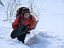 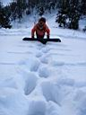 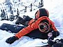 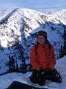 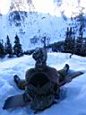 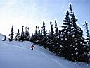 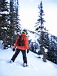 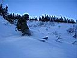 Второй раз скатились даже еще удачнее, потому как не промахнулись на выкате на тропу. Все, накатались! Кулаур раскатан и закатан, пенки сняты :) Темнеет, пора заряжать аккумуляторы теплом, килокалориями и общением. Спасибо ребятам из Норвегии за зимовье, спасибо Мамаю за теплую погоду - четверь чурки, и жара как в бане ! После ужина начинает клонить в сон, но у нас есть важное дело - мы идем к "чумовым" ребятам узнавать последние новости. Ребята живут в чуме, топят печку, варят вкуснющий малиновый чай и рассказывают про Поляну, на которую раньше не ступала нога фрирайдера. Байкальский Экстрим в лице Сергея Лавиновича и Артема вышли из лагеря в 8:30 и были на горе в 14:30. Их догнали иркутяне во главе с Димой Яскиным, которые подзадержались, снимая на видео прыжки с камня. Ребята благополучно сделали первый спуск с горы, правда сноубордистам пологих участках досталось тропежки, но в общем все были довольны :) 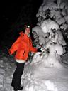 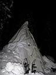 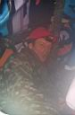 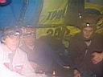 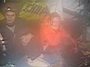 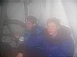 Ждать рассвета в чуме мы не стали, попрощались с хозяевами и пошли смотреть долгие глючные сны, про то, как на Мамае появилась локальная сеть, и все общались по ICQ, а на зимуху сходили лавины с соседних елок :) От бессоницы лечились наушником в ухо, через который в мозг попадало регги "5ницы" и японский транс... Продолжение следует ... Декабрь 2006. Белокрылов А.Ю. Слюдянка. |
Лирика : |